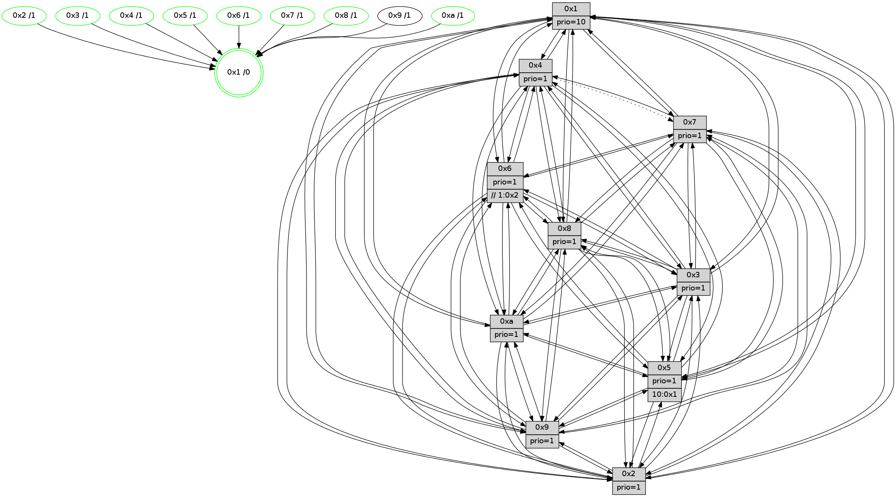

>> << IDX [start] -100 -25 -5 +0 +5 +25 +100 [1490.00611401]
 Previous packets
----------------------------------------------------------------------
1485.267346 beacon01(faad) #0 coord=01,02,03,04,05,06,07,0a,09,08 cycle=688.0ms assoc
-- color-indic=1 64 c0 f4
1485.277330 beacon02(faad) #0 coord=01,02,03,04,05,06,07,0a,09,08 cycle=688.0ms assoc 64 53 c5
1485.287328 beacon03(faad) #0 coord=01,02,03,04,05,06,07,0a,09,08 cycle=688.0ms assoc 64 29 88
1485.297329 beacon04(faad) #0 coord=01,02,03,04,05,06,07,0a,09,08 cycle=688.0ms assoc 64 5e 62
1485.307329 beacon05(faad) #0 coord=01,02,03,04,05,06,07,0a,09,08 cycle=688.0ms assoc 64 24 2f
1485.317328 beacon06(faad) #0 coord=01,02,03,04,05,06,07,0a,09,08 cycle=688.0ms assoc 64 aa f8
1485.327330 beacon07(faad) #0 coord=01,02,03,04,05,06,07,0a,09,08 cycle=688.0ms assoc 64 d0 b5
1485.337335 beacon0a(faad) #0 coord=01,02,03,04,05,06,07,0a,09,08 cycle=688.0ms assoc 64 a1 be
1485.357334 beacon08(faad) #0 coord=01,02,03,04,05,06,07,0a,09,08 cycle=688.0ms assoc 64 55 24
1485.370521 [Hello(1): seq=856 sym=4,2,9,5,10,3,8,6,7 sysInfo=coloring-mode-on,ColoringModeRequestCalled stat=4:5,12,4,4/2:14,8,13,6/9:6,2,13,2/5:10,1,3,11/10:1,11,4,8/3:8,8,3,12/8:2,8,15,5/6:4,2,0,3/7:5,10,7,2]
1485.373249 [Hello(5): seq=947 sym=7,6,4,3,1,9,8,10,2 sysInfo=hasWarning stat=7:12,9,8,1/6:5,9,1,0/4:3,0,15,0/3:14,9,3,3/1:0,4,13,0/9:1,1,5,11/8:15,7,14,6/10:12,5,10,9/2:0,3,1,8]
1485.375942 [Color(10) seq=536 @0:0 prio=1]
1485.379137 [Hello(2): seq=943 sym=4,5,7,6,3,9,8,10,1 sysInfo=hasWarning stat=4:14,8,3,14/5:14,9,7,4/7:14,7,6,2/6:1,4,2,0/3:0,1,7,2/9:12,3,13,10/8:11,4,14,14/10:12,0,14,11/1:10,1,0,0]
1485.383560 [Color(2) seq=523 @0:0 prio=1]
1485.384996 [Color(5) seq=483 @0:0 prio=1 >10.@1,1.@2,1.@3,1.@4]
1485.387727 [Hello(6): seq=947 sym=3,2,5,4,7,9,8,10,1 sysInfo=hasWarning stat=3:14,14,8,0/2:6,11,3,0/5:3,4,11,6/4:14,4,3,9/7:9,8,0,0/9:1,4,4,11/8:0,14,10,8/10:3,13,14,13/1:3,2,5,1]
1485.390470 [Hello(3): seq=947 sym=1,7,6,2,4,8,9,10,5 sysInfo=hasWarning stat=1:0,13,8,0/7:14,5,7,15/6:9,14,11,3/2:2,4,1,0/4:3,12,10,14/8:6,5,15,7/9:11,0,0,1/10:11,11,5,5/5:3,11,3,3]
1485.393921 [Color(3) seq=576 @0:0 prio=1]
1485.401011 [Color(6) seq=579 @0:0 prio=1 >>1.@2,1.@3,1.@4]
----------------------------------------------------------------------
1486.055478 beacon01(faad) #0 coord=01,02,03,04,05,06,07,0a,09,08 cycle=688.0ms assoc
-- color-indic=1 64 7c f1
1486.065460 beacon02(faad) #0 coord=01,02,03,04,05,06,07,0a,09,08 cycle=688.0ms assoc 64 ef c0
1486.075461 beacon03(faad) #0 coord=01,02,03,04,05,06,07,0a,09,08 cycle=688.0ms assoc 64 95 8d
1486.085460 beacon04(faad) #0 coord=01,02,03,04,05,06,07,0a,09,08 cycle=688.0ms assoc 64 e2 67
1486.095460 beacon05(faad) #0 coord=01,02,03,04,05,06,07,0a,09,08 cycle=688.0ms assoc 64 98 2a
1486.105460 beacon06(faad) #0 coord=01,02,03,04,05,06,07,0a,09,08 cycle=688.0ms assoc 64 16 fd
1486.115460 beacon07(faad) #0 coord=01,02,03,04,05,06,07,0a,09,08 cycle=688.0ms assoc 64 6c b0
1486.125466 beacon0a(faad) #0 coord=01,02,03,04,05,06,07,0a,09,08 cycle=688.0ms assoc 64 1d bb
1486.145467 beacon08(faad) #0 coord=01,02,03,04,05,06,07,0a,09,08 cycle=688.0ms assoc 64 e9 21
1486.156979 [Hello(10): seq=880 sym=6,2,3,8,7,5,9,4,1 sysInfo=hasWarning stat=6:11,5,8,5/2:8,11,10,1/3:11,2,1,15/8:5,0,11,5/7:14,10,8,10/5:13,15,3,3/9:6,6,8,1/4:0,14,5,3/1:4,8,3,1]
1486.160974 [Hello(7): seq=947 sym=2,3,5,6,8,9,10,1 sysInfo=hasWarning stat=2:8,10,3,5/3:0,4,5,5/5:15,4,5,5/6:3,0,3,13/8:1,2,0,0/9:4,15,0,2/10:10,2,10,7/1:9,11,0,0]
1486.163276 [Hello(8): seq=891 sym=5,2,3,7,9,6,4,10,1 sysInfo=hasWarning stat=5:12,7,0,3/2:4,6,11,13/3:13,8,15,5/7:9,4,3,0/9:15,6,1,5/6:5,7,11,1/4:5,11,7,2/10:5,10,7,5/1:1,9,5,0]
1486.166479 [Color(1) seq=627 @0:0 prio=10]
1486.167923 [Color(7) seq=475 @0:0 prio=1]
1486.170364 [Hello(4): seq=947 sym=5,8,6,2,3,9,10,1 asym=7 sysInfo=hasWarning stat=5:11,3,2,4/8:4,9,1,0/6:4,14,13,2/2:2,15,5,2/3:1,10,12,0/9:1,15,7,2/10:7,10,14,14/1:11,4,5,1/7:7,0,4,0]
1486.174960 [Hello(9): seq=891 sym=2,5,3,4,7,6,8,10,1 sysInfo=hasWarning stat=2:15,15,9,12/5:3,4,1,0/3:12,4,5,6/4:13,15,1,3/7:12,7,2,5/6:14,0,8,1/8:12,6,0,8/10:10,15,2,0/1:3,7,3,1]
1486.177868 [Color(4) seq=486 @0:0 prio=1]
1486.181398 [Color(8) seq=546 @0:0 prio=1]
----------------------------------------------------------------------
1486.843608 beacon01(faad) #0 coord=01,02,03,04,05,06,07,0a,09,08 cycle=688.0ms assoc
-- color-indic=1 64 68 9f
1486.853591 beacon02(faad) #0 coord=01,02,03,04,05,06,07,0a,09,08 cycle=688.0ms assoc 64 fb ae
1486.863591 beacon03(faad) #0 coord=01,02,03,04,05,06,07,0a,09,08 cycle=688.0ms assoc 64 81 e3
1486.873590 beacon04(faad) #0 coord=01,02,03,04,05,06,07,0a,09,08 cycle=688.0ms assoc 64 f6 09
1486.883591 beacon05(faad) #0 coord=01,02,03,04,05,06,07,0a,09,08 cycle=688.0ms assoc 64 8c 44
1486.893591 beacon06(faad) #0 coord=01,02,03,04,05,06,07,0a,09,08 cycle=688.0ms assoc 64 02 93
1486.903592 beacon07(faad) #0 coord=01,02,03,04,05,06,07,0a,09,08 cycle=688.0ms assoc 64 78 de
1486.913595 beacon0a(faad) #0 coord=01,02,03,04,05,06,07,0a,09,08 cycle=688.0ms assoc 64 09 d5
1486.933595 beacon08(faad) #0 coord=01,02,03,04,05,06,07,0a,09,08 cycle=688.0ms assoc 64 fd 4f
1486.945739 [Hello(1): seq=857 sym=4,2,9,5,10,3,8,6,7 sysInfo=coloring-mode-on,ColoringModeRequestCalled stat=4:6,13,4,4/2:15,9,13,6/9:7,2,13,2/5:11,2,3,11/10:2,12,4,8/3:9,9,3,12/8:2,9,15,5/6:5,3,0,3/7:5,11,7,2]
1486.948461 [Hello(5): seq=948 sym=7,6,4,3,1,9,8,10,2 sysInfo=hasWarning stat=7:13,10,8,1/6:6,10,1,0/4:4,1,15,0/3:15,10,3,3/1:1,5,13,0/9:2,1,5,11/8:15,8,14,6/10:13,5,10,9/2:0,3,1,8]
1486.951187 [Hello(6): seq=948 sym=3,2,5,4,7,9,8,10,1 sysInfo=hasWarning stat=3:14,14,8,0/2:6,11,3,0/5:3,4,11,6/4:15,5,3,9/7:10,9,0,0/9:2,4,4,11/8:0,15,10,8/10:4,13,14,13/1:4,3,5,1]
1486.954953 [Color(6) seq=580 @0:0 prio=1 >>1.@2,1.@3,1.@4]
1486.956749 [Hello(3): seq=948 sym=1,7,6,2,4,8,9,10,5 sysInfo=hasWarning stat=1:1,14,8,0/7:15,6,7,15/6:9,15,11,3/2:2,4,1,0/4:4,13,10,14/8:6,6,15,7/9:12,0,0,1/10:12,11,5,5/5:3,11,3,3]
1486.959501 [STC(1) #0.262 tree-change,inconsistent-stability,stable,to-color d=0]
1486.961799 [Color(3) seq=577 @0:0 prio=1]
1486.964687 [Color(5) seq=484 @0:0 prio=1 >10.@1,1.@2,1.@3,1.@4]
1486.967912 [Hello(2): seq=944 sym=4,5,7,6,3,9,8,10,1 sysInfo=hasWarning stat=4:15,9,3,14/5:14,10,7,4/7:15,8,6,2/6:2,5,2,0/3:1,2,7,2/9:13,3,13,10/8:11,5,14,14/10:13,0,14,11/1:11,2,0,0]
1486.971558 [Color(10) seq=537 @0:0 prio=1]
1486.974377 [Color(2) seq=524 @0:0 prio=1]
----------------------------------------------------------------------
1487.631741 beacon01(faad) #0 coord=01,02,03,04,05,06,07,0a,09,08 cycle=688.0ms assoc
-- color-indic=1 64 d4 9a
1487.641723 beacon02(faad) #0 coord=01,02,03,04,05,06,07,0a,09,08 cycle=688.0ms assoc 64 47 ab
1487.651723 beacon03(faad) #0 coord=01,02,03,04,05,06,07,0a,09,08 cycle=688.0ms assoc 64 3d e6
1487.661723 beacon04(faad) #0 coord=01,02,03,04,05,06,07,0a,09,08 cycle=688.0ms assoc 64 4a 0c
1487.671724 beacon05(faad) #0 coord=01,02,03,04,05,06,07,0a,09,08 cycle=688.0ms assoc 64 30 41
1487.681724 beacon06(faad) #0 coord=01,02,03,04,05,06,07,0a,09,08 cycle=688.0ms assoc 64 be 96
1487.691724 beacon07(faad) #0 coord=01,02,03,04,05,06,07,0a,09,08 cycle=688.0ms assoc 64 c4 db
1487.701728 beacon0a(faad) #0 coord=01,02,03,04,05,06,07,0a,09,08 cycle=688.0ms assoc 64 b5 d0
1487.721729 beacon08(faad) #0 coord=01,02,03,04,05,06,07,0a,09,08 cycle=688.0ms assoc 64 41 4a
1487.733347 [STC(6)->1 #0.262 tree-change,inconsistent-stability,stable,to-color d=1]
1487.735356 [Hello(9): seq=892 sym=2,5,3,4,7,6,8,10,1 sysInfo=hasWarning stat=2:0,0,9,12/5:4,5,1,0/3:13,5,5,6/4:13,0,1,3/7:12,7,2,5/6:15,1,8,1/8:12,7,0,8/10:10,0,2,0/1:4,7,4,1]
1487.738215 [Hello(10): seq=881 sym=6,2,3,8,7,5,9,4,1 sysInfo=hasWarning stat=6:11,5,8,5/2:8,12,10,1/3:11,2,1,15/8:5,1,11,5/7:15,11,8,10/5:13,15,3,3/9:7,6,8,1/4:1,15,5,3/1:5,9,3,1]
1487.741179 [STC(9)->1 #0.262 tree-change,inconsistent-stability,to-color d=1]
1487.742691 [Color(1) seq=628 @0:0 prio=10]
1487.750008 [Hello(7): seq=948 sym=2,3,5,6,8,4,9,10,1 sysInfo=hasWarning stat=2:9,11,3,5/3:1,5,5,5/5:0,5,5,5/6:4,1,3,13/8:2,3,0,0/4:0,1,0,0/9:5,15,0,2/10:11,3,10,7/1:10,11,1,0]
1487.753785 [STC(7)->1 #0.262 tree-change,inconsistent-stability,stable,to-color d=1]
1487.755117 [Hello(8): seq=892 sym=5,2,3,7,9,6,4,10,1 sysInfo=hasWarning stat=5:13,8,0,3/2:5,7,11,13/3:14,9,15,5/7:9,4,3,0/9:15,6,1,5/6:6,8,11,1/4:5,11,7,2/10:6,11,7,5/1:2,9,6,0]
1487.757945 [STC(8)->1 #0.262 tree-change,inconsistent-stability,stable,to-color d=1]
1487.759595 [Color(8) seq=547 @0:0 prio=1]
1487.761327 [Hello(4): seq=948 sym=5,8,6,2,3,9,10,1 asym=7 sysInfo=hasWarning stat=5:12,4,2,4/8:4,10,1,0/6:5,15,13,2/2:3,0,5,2/3:2,11,12,0/9:1,15,7,2/10:8,11,14,14/1:12,4,6,1/7:7,0,4,0]
1487.764665 [Color(7) seq=476 @0:0 prio=1]
1487.766437 [STC(4)->1 #0.262 tree-change,inconsistent-stability,stable,to-color d=1]
1487.768732 [Color(4) seq=487 @0:0 prio=1]
----------------------------------------------------------------------
1488.419870 beacon01(faad) #0 coord=01,02,03,04,05,06,07,0a,09,08 cycle=688.0ms assoc
-- color-indic=1 64 10 94
1488.429852 beacon02(faad) #0 coord=01,02,03,04,05,06,07,0a,09,08 cycle=688.0ms assoc 64 83 a5
1488.439854 beacon03(faad) #0 coord=01,02,03,04,05,06,07,0a,09,08 cycle=688.0ms assoc 64 f9 e8
1488.449853 beacon04(faad) #0 coord=01,02,03,04,05,06,07,0a,09,08 cycle=688.0ms assoc 64 8e 02
1488.459852 beacon05(faad) #0 coord=01,02,03,04,05,06,07,0a,09,08 cycle=688.0ms assoc 64 f4 4f
1488.469853 beacon06(faad) #0 coord=01,02,03,04,05,06,07,0a,09,08 cycle=688.0ms assoc 64 7a 98
1488.479854 beacon07(faad) #0 coord=01,02,03,04,05,06,07,0a,09,08 cycle=688.0ms assoc 64 00 d5
1488.489857 beacon0a(faad) #0 coord=01,02,03,04,05,06,07,0a,09,08 cycle=688.0ms assoc 64 71 de
1488.509858 beacon08(faad) #0 coord=01,02,03,04,05,06,07,0a,09,08 cycle=688.0ms assoc 64 85 44
1488.521751 [Hello(1): seq=858 sym=4,2,9,5,10,3,8,6,7 sysInfo=coloring-mode-on,ColoringModeRequestCalled stat=4:7,14,5,4/2:0,10,13,6/9:8,2,13,2/5:11,3,3,11/10:2,13,4,8/3:9,10,3,12/8:3,10,0,5/6:5,3,1,3/7:6,12,8,2]
1488.525514 [Color(10) seq=538 @0:0 prio=1]
1488.526845 [Hello(6): seq=949 sym=3,2,5,4,7,9,8,10,1 sysInfo=hasWarning stat=3:15,15,8,0/2:7,12,3,0/5:4,5,11,6/4:0,6,4,9/7:11,10,1,0/9:3,4,5,11/8:1,0,11,8/10:5,14,14,13/1:5,4,6,1]
1488.530677 [Hello(2): seq=945 sym=4,5,7,6,3,9,8,10,1 sysInfo=hasWarning stat=4:0,10,4,14/5:15,10,7,4/7:0,9,7,2/6:2,5,3,0/3:1,2,7,2/9:14,3,14,10/8:12,6,15,14/10:14,0,14,11/1:12,3,0,0]
1488.534139 [Color(2) seq=525 @0:0 prio=1]
1488.536253 [Hello(5): seq=949 sym=7,6,4,3,1,9,8,10,2 sysInfo=hasWarning stat=7:14,11,9,1/6:6,10,2,0/4:5,2,0,0/3:15,10,3,3/1:2,6,13,0/9:3,1,6,11/8:0,9,15,6/10:14,6,10,9/2:1,4,1,8]
1488.538906 [Color(6) seq=581 @0:0 prio=1 >>1.@2,1.@3,1.@4]
1488.541692 [Hello(3): seq=949 sym=1,7,6,2,4,8,9,10,5 sysInfo=hasWarning stat=1:2,15,8,0/7:0,7,8,15/6:9,15,12,3/2:3,5,1,0/4:5,14,11,14/8:7,7,0,7/9:13,0,1,1/10:13,12,5,5/5:4,12,3,3]
1488.544843 [Color(3) seq=578 @0:0 prio=1]
1488.546079 [Color(5) seq=485 @0:0 prio=1 >10.@1,1.@2,1.@3,1.@4]
----------------------------------------------------------------------
1489.208001 beacon01(faad) #0 coord=01,02,03,04,05,06,07,0a,09,08 cycle=688.0ms assoc
-- color-indic=1 64 ac 91
1489.217985 beacon02(faad) #0 coord=01,02,03,04,05,06,07,0a,09,08 cycle=688.0ms assoc 64 3f a0
1489.227983 beacon03(faad) #0 coord=01,02,03,04,05,06,07,0a,09,08 cycle=688.0ms assoc 64 45 ed
1489.237984 beacon04(faad) #0 coord=01,02,03,04,05,06,07,0a,09,08 cycle=688.0ms assoc 64 32 07
1489.247986 beacon05(faad) #0 coord=01,02,03,04,05,06,07,0a,09,08 cycle=688.0ms assoc 64 48 4a
1489.257985 beacon06(faad) #0 coord=01,02,03,04,05,06,07,0a,09,08 cycle=688.0ms assoc 64 c6 9d
1489.267986 beacon07(faad) #0 coord=01,02,03,04,05,06,07,0a,09,08 cycle=688.0ms assoc 64 bc d0
1489.277992 beacon0a(faad) #0 coord=01,02,03,04,05,06,07,0a,09,08 cycle=688.0ms assoc 64 cd db
1489.287991 beacon09(faad) #0 coord=01,02,03,04,05,06,07,0a,09,08 cycle=688.0ms assoc 64 43 0c
1489.297989 beacon08(faad) #0 coord=01,02,03,04,05,06,07,0a,09,08 cycle=688.0ms assoc 64 39 41
1489.309863 [Hello(10): seq=882 sym=6,2,3,8,7,5,9,4,1 sysInfo=hasWarning stat=6:12,6,8,5/2:9,13,10,1/3:12,3,1,15/8:6,2,12,5/7:0,12,9,10/5:14,0,3,3/9:7,6,9,1/4:2,0,6,3/1:6,10,3,1]
1489.313096 [Color(1) seq=629 @0:0 prio=10]
1489.314401 [Hello(9): seq=893 sym=2,5,3,4,7,6,8,10,1 sysInfo=hasWarning stat=2:1,1,9,12/5:5,6,1,0/3:14,6,5,6/4:14,1,2,3/7:13,8,3,5/6:0,2,8,1/8:13,8,1,8/10:10,1,2,0/1:5,8,4,1]
1489.317257 PARSE ERROR************************
Traceback (most recent call last):
File "PacketAnalysis.py", line 167, in showOperaPacket
structPacket = OperaPacketParse.parsePacket(rawPacket)
File "../../pkg-python/HipSens/Core/OperaPacketParse.py", line 461, in parsePacket
return parseHelloMessage(data)
File "../../pkg-python/HipSens/Core/OperaPacketParse.py", line 127, in parseHelloMessage
assert struct.calcsize("H")*len(neighAddrList) == len(linkList)
AssertionError
48 36 04 00 03 b5 00 02 02 10 05 00 08 00 06 00 02 00 03 00 09 00 0a 00 01 00 01 02 07 00 53 04 00 02 00 00 4c 12 42 5d 01 a4 2e 06 25 14 0c c3 27 f2 ee c8 16 4d 04 07 4c ab
1489.321436 [Color(4) seq=488 @0:0 prio=1]
1489.324238 [Hello(8): seq=893 sym=5,2,3,7,9,6,4,10,1 sysInfo=hasWarning stat=5:14,9,0,3/2:6,8,11,13/3:15,10,15,5/7:9,5,3,0/9:0,6,1,5/6:7,9,12,1/4:6,12,8,2/10:6,12,7,5/1:3,9,6,0]
1489.328964 [Color(8) seq=548 @0:0 prio=1]
1489.330632 [Hello(7): seq=949 sym=2,3,5,6,8,4,9,10,1 sysInfo=hasWarning stat=2:10,12,3,5/3:2,6,5,5/5:1,6,5,5/6:5,2,4,13/8:2,3,0,0/4:0,2,1,0/9:6,15,0,2/10:11,4,10,7/1:11,11,1,0]
1489.335036 [Color(7) seq=477 @0:0 prio=1]
----------------------------------------------------------------------
1489.996132 beacon01(faad) #0 coord=01,02,03,04,05,06,07,0a,09,08 cycle=688.0ms assoc
-- color-indic=1 64 98 89